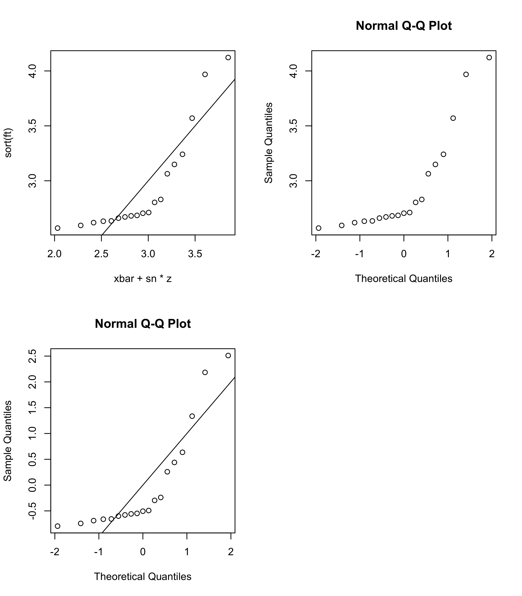
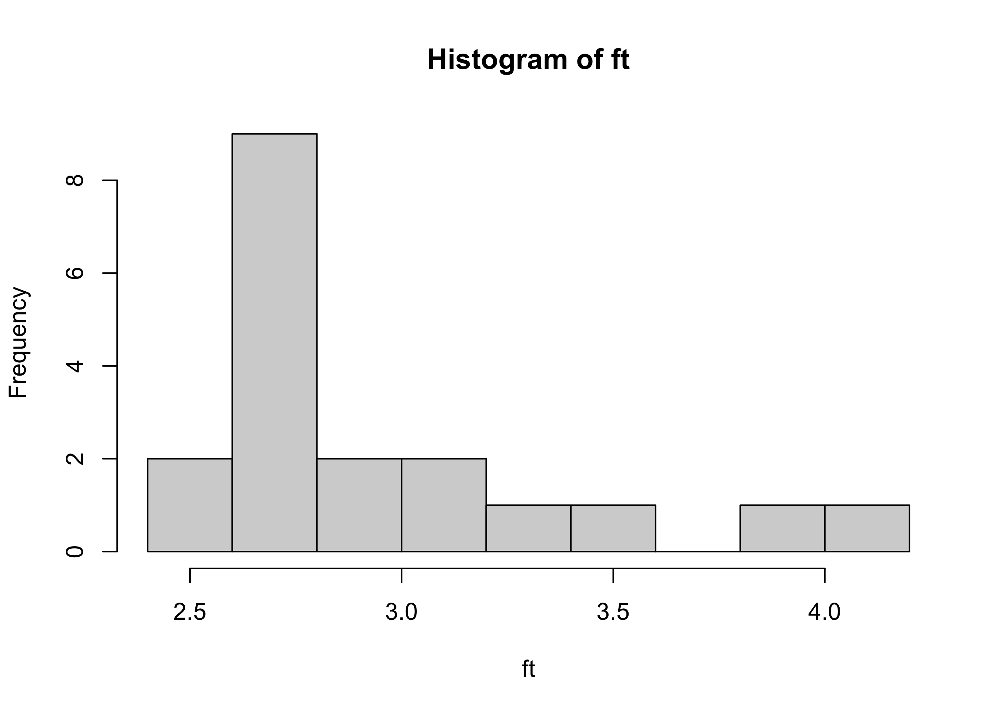
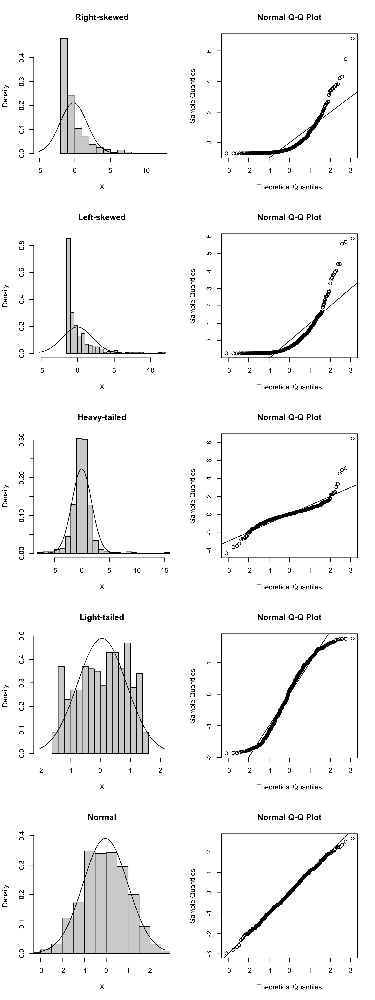

Here we continue working with the random sample of Definition 15.1. That is, we consider a set of random variables \(X_1,\dots,X_n\) all drawn (independently) from the same distribution, say \(F\). In Chapter 15 we paid special attention to the behavior of the mean \(\bar X_n\) of a random sample, where this is the average of the values. Proposition 15.2 stated that if the random sample is drawn from a normal distribution, then the sample mean will also be normally distributed.
It will turn out to be very important for us to know whether the sample mean in a given situation will behave like a normally distributed random variable. Here, we will learn about a tool for assessing whether the random sample may have been drawn from a normal distribution. If, according to this assessment, the sample does appear to have come from a normal population, then we can treat the sample mean as having a normal distribution; if not, then we might not be able to do so.
The tool referred to is called a quantile-quantile (QQ) plot. A QQ plot can be used to check whether a random sample may have been drawn from a particular distribution one has in mind. Of interest to us will be whether the random sample may have been drawn from a normal population, so we will use a normal QQ plot—normal QQ plot for short.
The basic idea is to compare quantiles of the data distribution with the corresponding quantiles of a normal distribution to see if they are close. By the data distribution, we mean the probability distribution which puts probability \(1/n\) on each of the values \(X_1,\dots,X_n\). Now, to which normal distribution do we compare quantiles of the data distribution? We will use the normal distribution having mean equal to the sample mean \(\bar X_n\) and standard deviation equal to the sample standard deviation \(S_n\), as this is the normal distribution which is “closest” in some sense to the data distribution. Next, which quantiles will we compare? We could, for example, compare the median and the 25th and 75th percentiles of the data distribution and the \(\mathcal{N}(\bar X_n,S_n^2)\) distribution to see if they are close—really we can choose any set of quantiles we want. It is a convention, however, to use a number of quantiles equal to the sample size.
Specifically, for the data, we consider the quantiles \(1/n,\dots,(n-1)/n,1\), which correspond to the values \(X_1,\dots,X_n\) when these are sorted in increasing order. We denote the ordered sample values as \(X_{(1)} \leq \dots \leq X_{(n)}\) (these are called the order statistics of the random sample). The idea is to compare the values of \(X_{(1)} \leq \dots \leq X_{(n)}\), which are the quantiles \(1/n,\dots,(n-1)/n,1\) of the data distribution, respectively, with the corresponding quantiles of the \(\mathcal{N}(\bar X_n,S_n^2)\) distribution. However, since the latter distribution is a continuous distribution, the largest quantile—the 100th percentile—is equal to infinity. As an ad-hoc way to comparing the \(100\%\) data percentile \(X_{(n)}\) with the \(100\%\) population percentile, which is positive infinity, we compare the values of \(X_{(1)} \leq \dots \leq X_{(n)}\) to adjusted quantiles \((1 - 0.5)/n,\dots (n - 0.5)/n\) of the \(\mathcal{N}(\bar X_n,S_n^2)\) distribution, where the subtraction of \(0.5\) can be seen as a kind of “continuity correction”.
The normal QQ plot is a visual comparison of these quantiles. Letting \(z_{(i)}\) denote the \((i-0.5)/n\) quantile of the \(\mathcal{N}(0,1)\) distribution for \(i=1,\dots,n\), we construct the normal QQ plot by making a scatterplot of the points \[
(X_{(i)},\bar X_n + S_n z_{(i)}), \quad i=1,\dots,n.
\tag{18.1}\]
If the sample was drawn from a normal distribution, these points should fall close to the line \(y = x\). That is, the quantiles of the data distribution should closely match the corresponding quantiles of the normal distribution with mean and standard deviation equal to the sample mean and sample standard deviation.
Figure 18.1 shows normal QQ plots for the pinewood derby finishing times from Example 15.1. The top left panel plots the points in Equation 18.1, whereas the top right panel shows as scatterplot of the points \[
(X_{(i)},z_{(i)}), \quad i=1,\dots,n,
\tag{18.2}\] which is the plot produced by the qqnorm() function in R. This version of the normal QQ plot plots the data quantiles against the corresponding quantiles of the standard normal distribution, that is the \(\mathcal{N}(0,1)\) distribution. Here, we simply look to see if the points lie along a straight line (though it is no longer the \(y=x\) line).
One can also plot the points \[
\Big(\frac{X_{(i)} - \bar X_n}{S_n},z_{(i)}), \quad i = 1,\dots,n
\] and look to see if they fall close to the \(y=x\) line. This plot appears in the lower left panel of Figure 18.1.
ft <-c(2.5692,2.5936,2.6190,2.6320,2.6345,2.6602,2.6708,2.6804,2.6850,2.7049,2.7111,2.8034,2.8300,3.0639,3.1489,3.2411,3.5701,3.9686,4.1220)xbar <-mean(ft) sn <-sd(ft) n <-length(ft)par(mfrow=c(2,2))# first way to make the normal QQ plotu <- (c(1:n) -1/2) / nz <-qnorm(u)plot(xbar + sn*z,sort(ft))abline(0,1)# default normal QQ plot in Rqqnorm(ft)# standardize data values firstqqnorm(scale(ft))abline(0,1)

Figure 18.1: Normal QQ plots for the pinewood derby finishing times.
From the normal QQ plots, it is apparent that the quantiles of the pinewood derby finishing times are not close to what they would be if the sample had been drawn from a normal distribution, as the points do not lie along a straight line. The lower quantiles of the data distribution are lie above the line, indicating that they are greater than they would be if the sample had been drawn from a normal distribution, and the upper quantiles of the data are again greater. This is indicative of right-skewness. We see this right-skewness appear also in the histogram of the pinewood derby finishing times in Figure 18.2 .
Code
hist(ft)

Figure 18.2: Histogram of pinewood derby finishing times.
Figure 18.3 shows normal QQ plots for simulated random samples with \(n=500\) from right-skewed, left-skewed, heavy-tailed, light-tailed, and normal distributions. Over each histogram the PDF of the \(\mathcal{N}(\bar X_n, S_n^2)\) distribution is overlaid. We see that only for the normal distribution do the points in the normal QQ plot fall on a straight line.
Code
set.seed(3)n <-500settings <-c("Right-skewed","Left-skewed","Heavy-tailed","Light-tailed","Normal")XX <-matrix(0,n,length(settings))# right skeweda <-1/2b <-3XX[,1] <-rgamma(n,shape = a, scale = b) - a*b# left skeweda <-1/2b <-3XX[,2] <-rgamma(n,shape = a, scale = b) - a*b# heavy-tailedXX[,3] <-rt(n,2.5)# light-tailedXX[,4] <- (rbeta(n,1.25,1.25)-1/2)*3# normalXX[,5] <-rnorm(n)par(mfrow =c(length(settings),2))for(i in1:length(settings)){ X <- XX[,i] xbar <-mean(X) sn <-sd(X) lo <-min(X,qnorm(0.005,xbar,sn)) up <-max(X,qnorm(0.995,xbar,sn)) x <-seq(lo,up,length=500) fx <-dnorm(x,xbar,sn) h <-hist(X,plot=FALSE,breaks=20)plot(h, main=settings[i],freq=FALSE,ylim =c(0,max(h$density,fx)),xlim =c(lo,up))lines(fx~x)qqnorm(scale(X))abline(0,1)}

Figure 18.3: Example normal QQ plots for distributions of several shapes.
One may wonder why we do not simply look at the histogram to tell if our random sample was drawn from a normal distribution. One reason is that if the sample size is small, it can be difficult to tell the shape of the population distribution from the sample histogram. Deviations from normality will in this case show up much more clearly in the QQ plot.